Input formatParameter definitions
TRACking of particles .....(up to 80 char)
NPLOT NPRINT NPART NTURN
particle data ( 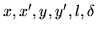 for all particles)
MLOCAT LIST NGRAPH XMIN XMAX XPMIN XPMAX YMIN YMAX
YPMIN YPMAX NCOL NLINE [ALMIN ALMAX DELMIN DELMAX]
NPLOT
0 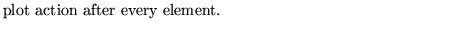
-1 
n 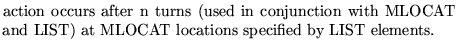
NPRINT
0 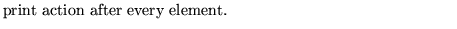
-1 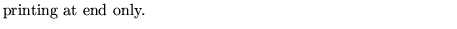
-2 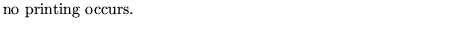
n
NOTE: when nplot=-1 and nprint=-2 then mlocat and list do not appear.MLOCAT and LIST are the same for plot and print.
NPART 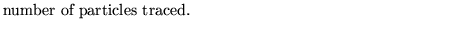
 0
0 
0 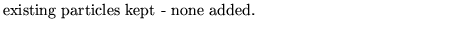
0 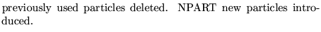
NTURN [t]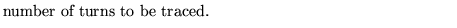
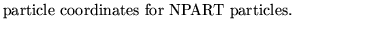
MLOCAT 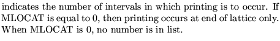
LIST 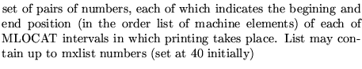
NGRAPH
1 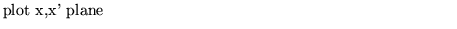
2 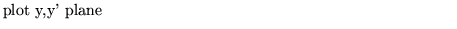
3
4 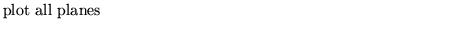
11,12,13,14
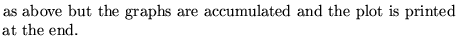
15,16
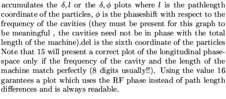
17

XMIN,XMAX,XPMIN,XPMAX,YMIN,YMAX,YPMIN,YPMAX
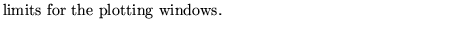
ALMIN,ALMAX,DELMIN,DELMAX
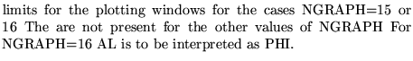
NCOL,NLINE 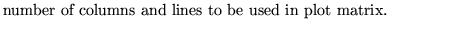
Examples
The first two examples are taken from demo3. The second one shows how to use the operation to track already existing particles.
The third example comes from demo13. It illustrates how to plot the longitudinal phase space using the RF phase advance and the relative momentum.
TRACKING OF PARTICLE TO MAKE TRIANGLE APPARENT 1 -1 3 500 .001 0.0 0.0003 0.0 0.0 0.00 .0015 0.0 0.0004 0.0 0.0 0.00 .0020 0.0 0.0005 0.0 0.0 0.00 0 11 -.005 0.005 -.001 0.001 -0.0006 0.0006 -.0003 0.0003 51 51, MOVEMENT ANALYSIS TO FIND UNSTABLE CLOSED ORBIT NEAR .03 .002 0 0 1 3 3 -4 1 0 .00001 0.03 0.002 0.0 0.0 0.0 0.00 0, tracking the 10 particles generated by the movemenet analysis just above 1 -2 0 1600 0 11 -.010 0.010 -.002 0.002 -.0006 0.0006 .0003 0.0003 51 51, tracking 1 -2 3 1000 0 0 0 0 0.001 0 0 0 0 0 0.001 0.0005 0 0 0 0 0.2 0 0 16 -0.01 0.01 -0.01 0.01 -0.01 0.01 -0.01 0.01 51 31 0 12.56 -0.003 0.003,